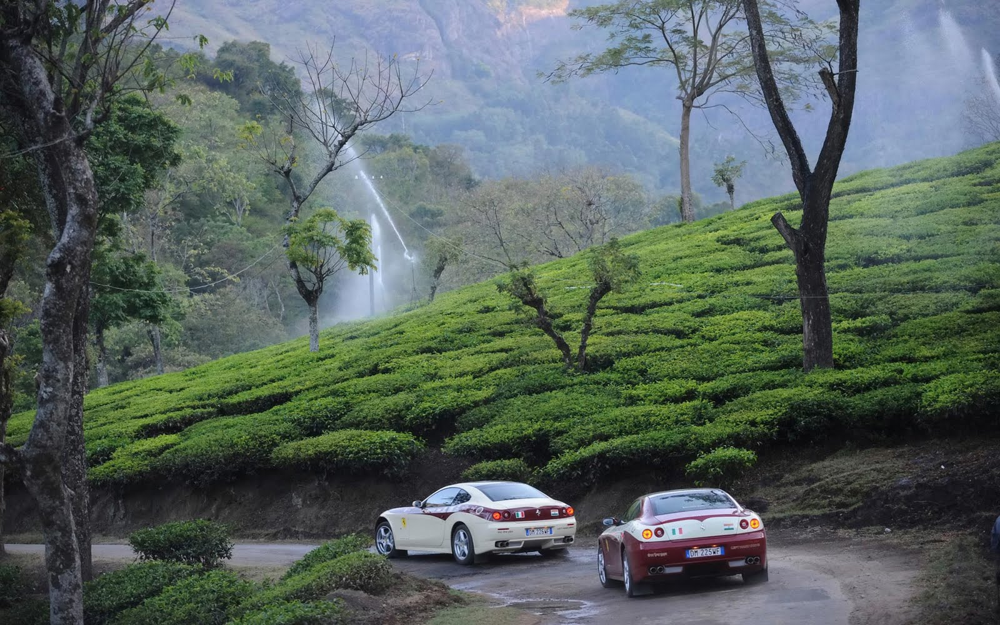

1 / 3

Caption Text
1 / 3

Caption Text
2 / 3

Caption Two
3 / 3

Caption Three
Ooty, also known as Udhagamandalam, is a hill station in the state of Tamil Nadu, in southern India. Surrounded by trees, central Ooty Lake is a huge artificial expanse of water with pleasure boats. On the slopes of nearby Elk Hill, the Rose Garden is home to over 2,000 varieties of roses. The Government Botanical Garden, created in the 19th century, features ferns, orchids and a prehistoric, fossilized tree.
The Government Rose Garden It is situated on the slopes of the Elk Hill in Vijayanagaram of Ooty town in Tamil Nadu, India at an altitude of 2200 meters..
Emerald Lake is located near Emerald village in the Nilgiris district in Tamil Nadu. It is located in a region called the silent valley, about 25 kilometers from the Ooty town. The lake is an important tourist and picnic spot in the region. The lake is famous for a variety of fish in the lake and birds in the locale. It is also notable for the scenic sun rise and sun set views near the lake. The lake is surrounded by tea plantations where visitors can buy tea products.
The Government Botanical Garden is a botanical garden in Udhagamandalam, near Coimbatore(Ooty), Tamil Nadu state, India laid out in 1848. The Gardens, divided into several sections, cover an area of around 55 hectares, and lie on the lower slopes of Doddabetta peak. The garden has a terraced layout. It is maintained by the Tamil Nadu Horticulture Department